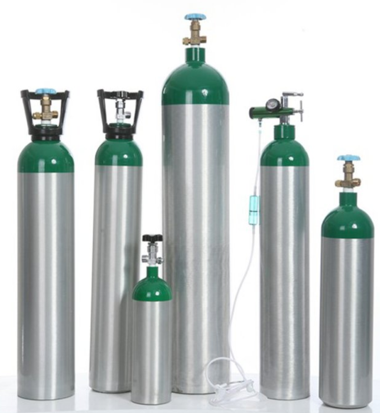

Nitrogen (N₂)
Atomic Number: 7 | Symbol: N | Type: Non-metal | Molecular Weight: 28.02 g/mol
Nitrogen makes up 78% of Earth's atmosphere and is essential for fertilizers, food preservation, and creating inert environments for industrial use.

Explore the fascinating properties and uses of different gases like Oxygen, Nitrogen, Argon, and Carbon Dioxide.
Atomic Number: 8 | Symbol: O | Type: Non-metal | Molecular Weight: 32.00 g/mol
Oxygen is essential for life, making up about 21% of Earth's atmosphere. It supports respiration, combustion, and industrial processes like welding and steelmaking.
Atomic Number: 7 | Symbol: N | Type: Non-metal | Molecular Weight: 28.02 g/mol
Nitrogen makes up 78% of Earth's atmosphere and is essential for fertilizers, food preservation, and creating inert environments for industrial use.
Atomic Number: 18 | Symbol: Ar | Type: Noble Gas | Molecular Weight: 39.95 g/mol
Argon is an inert gas used in welding, lighting, and insulation applications due to its non-reactive nature.

Carbon dioxide plays a crucial role in photosynthesis and is widely used in industries for carbonation, fire extinguishers, and chemical manufacturing.